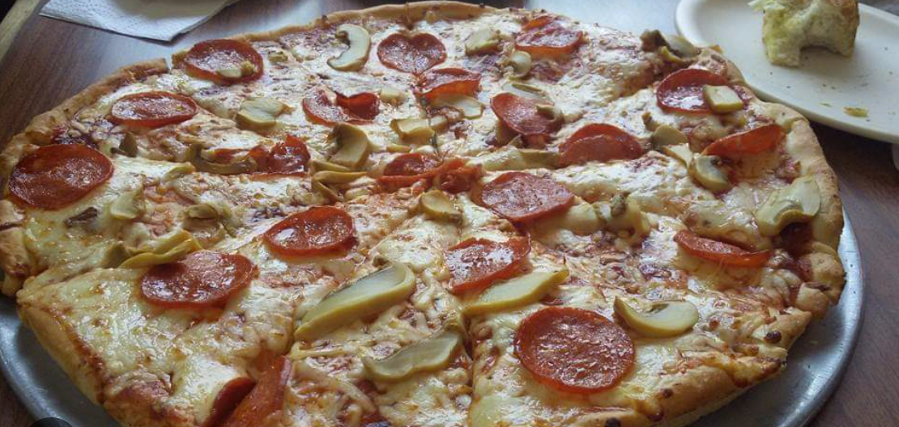

¿Por qué esta receta es especial?
Esta receta de pizza en 15 minutos es perfecta para esos momentos en los que tienes antojo de pizza pero no quieres esperar horas o pedir a domicilio. Con ingredientes básicos que probablemente ya tienes en casa, podrás crear una pizza deliciosa y crujiente.
Ingredientes necesarios:
- 1 base de pizza precocida (o tortilla grande)
- 3 cucharadas de salsa de tomate
- 150g de queso mozzarella rallado
- Pepperoni o jamón al gusto
- Champiñones frescos (opcional)
- Pimiento verde (opcional)
- Orégano seco
- Aceite de oliva
Preparación paso a paso:
- Precalienta el horno a 220°C (425°F)
- Prepara la base: Coloca la base de pizza en una bandeja para horno y pincela ligeramente con aceite de oliva
- Añade la salsa: Extiende la salsa de tomate de manera uniforme, dejando un borde de 1cm
- Agrega el queso: Espolvorea el queso mozzarella sobre toda la superficie
- Coloca los toppings: Distribuye el pepperoni, champiñones y pimiento
- Hornea: Mete al horno por 8-10 minutos hasta que el queso esté dorado
- Finaliza: Retira del horno, espolvorea orégano y deja reposar 2 minutos antes de cortar
Consejos de chef:
💡 Tip profesional: Para una base más crujiente, hornea la base sola durante 3 minutos antes de añadir los ingredientes.
🧀 Variación: Mezcla mozzarella con un poco de queso parmesano para más sabor.
🌶️ Toque picante: Añade unas gotas de aceite picante o chile en polvo antes de hornear.
Tiempo de preparación
5 minutos
Tiempo de cocción
10 minutos
Porciones
2-3 personas
Dificultad
Fácil
¿Te gustó esta receta?
¡Compártela con tus amigos y familiares! Y no olvides visitarnos para más recetas rápidas y deliciosas.
Ver más recetas